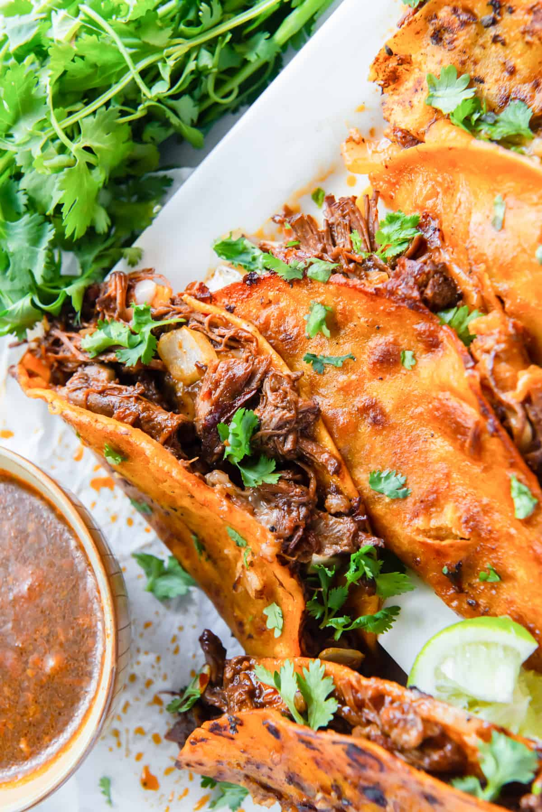

Beef Birria Tacos

This Rich and flavorful beef taco is served with a stew topped with onion, cilantro and a squeeze of fresh lime juice
They are possibly the most famous tacos you will find on social media. The image of these tacos with the fried and crispy meat and cheese sticking out the top, being dunked into a deep red consommé
Ingredients
- one pound of Short Ribs (Bone-in)
- Four Guajillo Peppers:
- Two White onion's
- One garlic clove
- Corn tortillas
- Teaspoon of Salt
- Teaspoon of oregano
- Teaspoon of cumin
- Bay leaves
- 3cups of mozzarella
Recipe instructions
- Grab a very large pot! This recipe fills up my 7 qt dutch oven to the very top.
- Halve the onion, cut the tip off the garlic bulb, cut off stem of peppers and remove seeds.
- Add all the ingredients to the stock pot and cover with water. Add in the seasonings.
- After 30 minutes of simmering skim the top of the broth to remove any impurities that have come out of the bones from simmering. It will look like little bits of foam on the top of the broth.
- Remove the peppers from the broth, they will be softened, add them to a food processor or blender and blend until smooth. Add a small amount of broth if needed to get a nice smooth texture.
- Continue to let the stew simmer until the meat is tender and easily shreds. This takes about 3 hours or longer. Remove the lid and stir every 40 minutes or so. Taste the broth and adjust seasonings as needed during the cooking process.
- Remove the meat from the broth and finely chop.
- Save the grease that comes to the top of the stew from cooking. Save it all and add the grease to a small/medium size skillet.
- Dip the corn tortillas into the grease, then place the tortilla on a large skillet or comal. Fry the tortillas in the grease over medium heat. Top the tortilla with chopped birria beef and shredded cheese. Fold the taco over while it’s frying, pressing down with the spatula to help flatten the taco. Fry both sides until the taco is crisp.